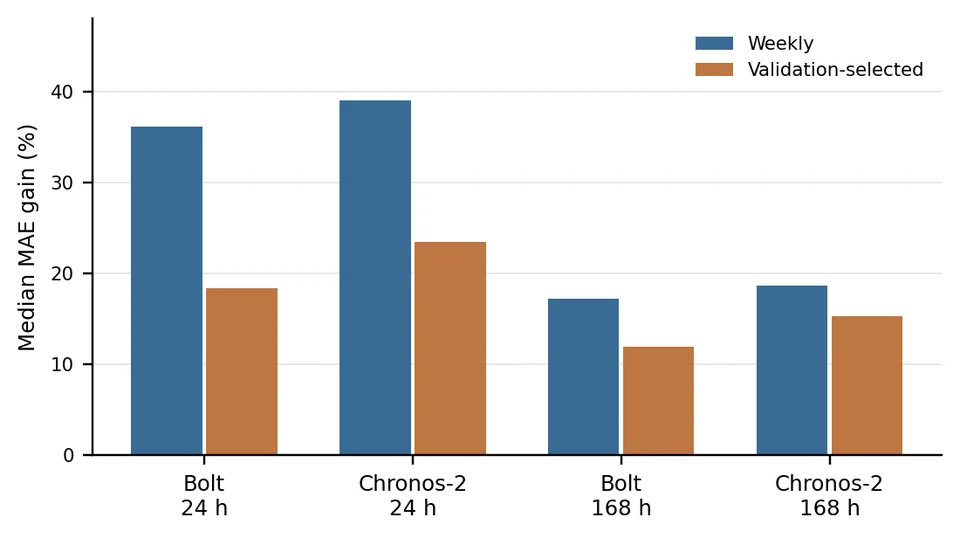
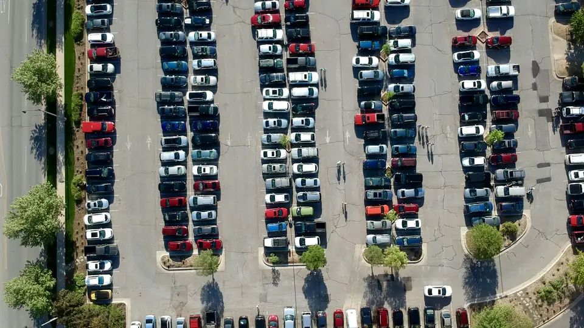

Hi, I'm Chandramohan. I'm an Applied Research Engineer at zeb, where I work on machine learning and data engineering in Databricks and on analytics in Microsoft Fabric, and handle Fabric deployment and the Azure services around it. Before zeb, I was a Data Science Intern and then a Data Engineer and BI Engineer at Avasoft. I completed a B.Tech in Artificial Intelligence and Data Science at Bannari Amman Institute of Technology (Anna University) in 2025, after a diploma in Electronics and Communication Engineering.
Time seriesForecasting and its evaluation: when a model's reported gain over a simple baseline holds up.
Reinforcement learningAgents that learn from the outcomes of their decisions and adjust how they act.
Temporal representation learning for decisionsRepresentations of how a system changes over time that support decisions, not just predictions.

Median case-level MAE gains against weekly and validation-selected references.
Seasonal Baseline Evaluation for Time-Series Foundation Models
AI Product Development Lab, Bannari Amman Institute of Technology · 2024 – 2026
Tests how much a foundation model's reported gain depends on the seasonal baseline, with the forecasts held fixed. Zero-shot Chronos-Bolt and Chronos-2 are compared with four seasonal rules (previous day, previous week, weekday hybrid, daily-weekly blend) across 60 cases from eight hourly electricity-load series, 24 and 168 hours ahead, with paired block-bootstrap intervals. Replacing the weekly rule with the validation-selected one cuts supported week-ahead wins from 21 to 14 of 30 for Bolt and from 18 to 15 for Chronos-2. Per-series Ridge and LightGBM models beat the selected rule in only 7 of 30 day-ahead and 4 of 30 week-ahead cases.
ECG Heartbeat Classification with CNNs and Transformers
Bannari Amman Institute of Technology · 2022
A five-class classifier for single heartbeats from the MIT-BIH Arrhythmia Database. Each beat becomes a short-time Fourier spectrogram; a 2D CNN extracts local time-frequency patterns and a Transformer relates features within the beat. It reaches 99.4% test accuracy and 0.94 macro-F1, with 88% recall on the under-represented supraventricular class, and a Streamlit dashboard shows each beat's predicted class.
PyTorch
STFT
2D CNN
Transformer
Streamlit
Projects

Parking Slot Occupancy Detection
AI Product Development Lab, BIT · 2023
Each marked slot is cropped from the live camera frame and checked with a Haar-cascade car detector, so it is labelled occupied or free on every frame. The free slot whose centre is closest to the entrance is shown to the arriving driver, along with total and free counts.
Set up an open-source four-way junction simulation that times each green phase from the waiting vehicles by class: about 2 s per car, 2.5 s per bus or truck and 1 s per bike, shared across lanes and kept between 10 and 60 s. Ran a pretrained YOLOv2 detector through Darkflow on road images to locate and label cars, buses and trucks.
Labels each customer review as positive or negative. Trained on 1,000 labelled restaurant reviews: letters-only cleaning, NLTK stop-word removal and Porter stemming, a 1,500-term bag of words, and Multinomial Naive Bayes on an 80/20 split. A Flask form returns the label for any review typed in.
Built a hotel-booking forecasting pipeline from data preparation through batch scoring; gradient-boosted models tuned on chronological splits brought held-out MAE 9% below the existing baseline.
Merged bookings already on hand with model predictions for the rest of each forecast, cut batch-inference runtime by 40%, and added data-quality checks and model monitoring.
Planned a Microsoft Fabric environment for 500+ business users: workspace layout, role-based access, deployment path, and governance with Purview Data Map, sensitivity labels and DLP policies.
Automated Fabric deployments with fabric-cicd and GitHub Actions, and moved paginated reports off SSRS, fixing their data-source rebinding through the REST API.
Built Databricks medallion pipelines (PySpark, Delta Lake) handling millions of records for 4+ enterprise clients in the US and Canada.
Parallelized a production pipeline and tuned its compute and orchestration, cutting runtime from 3–4 hours to 37–45 minutes.
Captured source inserts, updates and deletes incrementally, and fixed concurrent-write conflicts and out-of-order updates in downstream tables.
Migrated 30+ legacy Qlik reports to Power BI single-handedly on work scoped for two engineers, and unified 25 KPI definitions as standard semantic-model measures.
Coursework: Probability and Statistics, Applied Linear Algebra, Statistical Machine Learning, Deep Learning, Reinforcement Learning, Time Series Analysis and Forecasting, Natural Language Processing, Computer Vision, Design and Analysis of Algorithms, Data Structures Using C++, Data Warehousing and Data Mining
Diploma, Electronics and Communication Engineering
Aug 2019 – May 2022
Nachimuthu Polytechnic College · 93.2%, First Class with Superlative Distinction
Coursework: Engineering Mathematics I and II, Programming in C, Electronic Devices and Circuits, Digital Electronics, Linear Integrated Circuits, Microcontroller, Embedded System, Very Large Scale Integration
Skills
Languages
Python (pandas, NumPy), SQL, C
Machine learning
PyTorch, LightGBM, XGBoost, OpenCV, YOLO
Deep learning and forecasting
CNNs, LSTMs, Transformers, time-series foundation models (Chronos), time-series forecasting
Data engineering
Databricks (Delta Live Tables, Unity Catalog, Lakeflow Jobs), PySpark, Delta Lake, AWS Glue, Amazon S3, Amazon Redshift
BI and governance
Power BI, Qlik, Microsoft Fabric, Microsoft Purview, Azure SQL